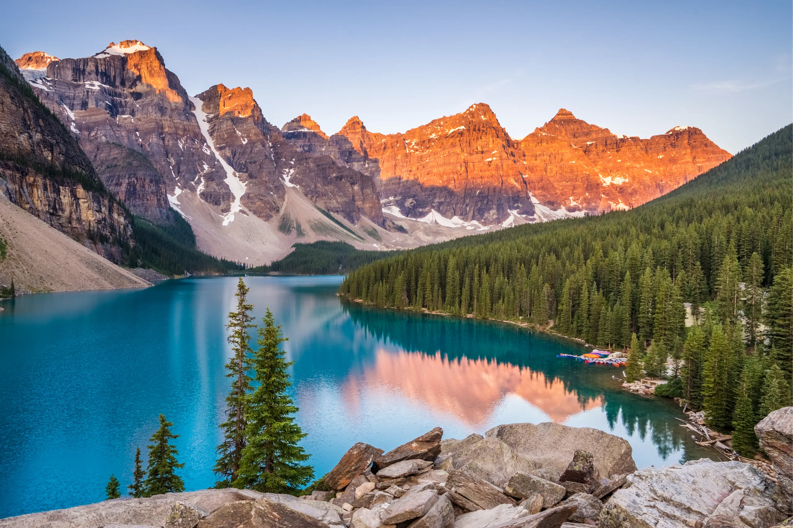

My Top 5 Destinations
-
Florence, Italy
- See the Duomo
- Visit museums
- Try authentic pasta and gelato
-
Tokyo, Japan
- Explore Shibuya
- Try different ramen spots
- Experience the city at night
-
Mykonos, Greece
- Enjoy the beach clubs
- Experience the nightlife
- Watch the sunset by the water
-
Banff, Canada
- See the mountains and lakes
- Go hiking
- Enjoy the scenery
-
Cabo San Lucas, Mexico
- Spend time at the beach
- Go on a boat tour
- Try local food
Photo Gallery


Travel Video
Click the image above or use this link: Epic Year of Travel Montage! 20 Countries in 1 Year
Back to topAbout This Project
I created this website from scratch using HTML and CSS. It includes a custom design, navigation links, a top five travel list, a photo gallery, and a clickable travel video link.
What I Learned
- How to organize a webpage with sections
- How to style a page using CSS
- How to add images and links to a website
Why I Chose This Topic
I chose this topic because traveling is something I am really interested in, and it let me build a website that feels fun and personal.